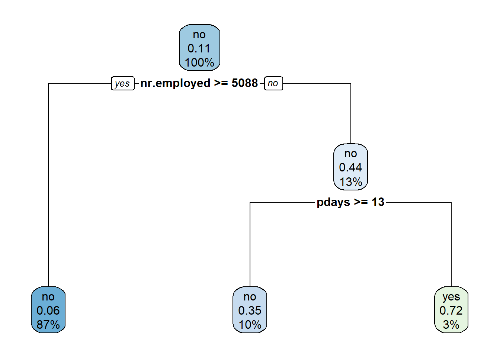
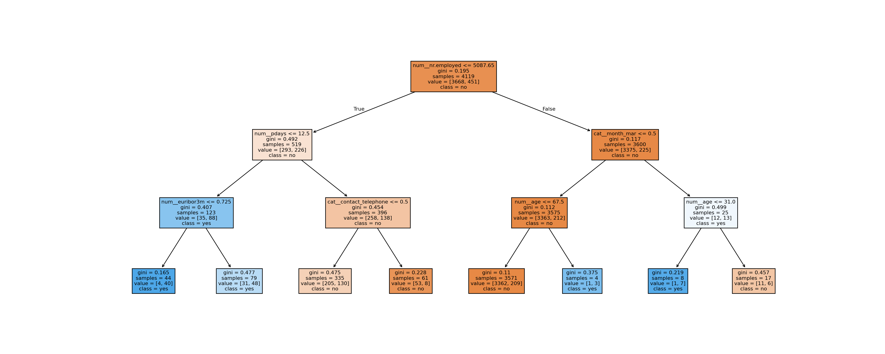
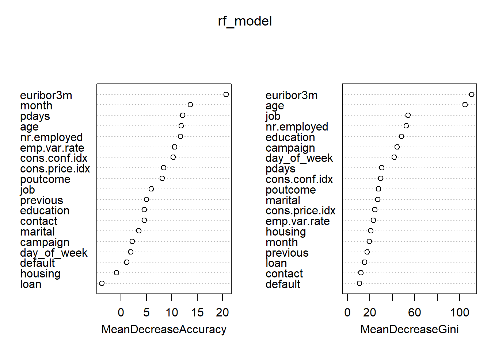

library(tidyverse)Week 3: From Problem Framing to Tree-Based Models and Interpretability
Part A — Reframing the Task as a Machine Learning Problem
In Week 1, we focused on understanding the dataset:
- what a row represents,
- how variables are generated,
- which values are meaningful,
- and which variables are valid at prediction time.
In this notebook, we move to a different kind of question:
Given what we now understand about the data, how can we frame this as a machine learning problem?
A0. Load the Dataset
We continue to use the same “UCI Bank Marketing” dataset that we selected for week 1.
R: Load and Inspect the Data
Load required packages
Read the dataset
bank <- read.csv("data/raw/bank-additional.csv", sep = ";",
stringsAsFactors = FALSE)Display first few rows
head(bank) age job marital education default housing loan contact
1 30 blue-collar married basic.9y no yes no cellular
2 39 services single high.school no no no telephone
3 25 services married high.school no yes no telephone
4 38 services married basic.9y no unknown unknown telephone
5 47 admin. married university.degree no yes no cellular
6 32 services single university.degree no no no cellular
month day_of_week duration campaign pdays previous poutcome emp.var.rate
1 may fri 487 2 999 0 nonexistent -1.8
2 may fri 346 4 999 0 nonexistent 1.1
3 jun wed 227 1 999 0 nonexistent 1.4
4 jun fri 17 3 999 0 nonexistent 1.4
5 nov mon 58 1 999 0 nonexistent -0.1
6 sep thu 128 3 999 2 failure -1.1
cons.price.idx cons.conf.idx euribor3m nr.employed y
1 92.893 -46.2 1.313 5099.1 no
2 93.994 -36.4 4.855 5191.0 no
3 94.465 -41.8 4.962 5228.1 no
4 94.465 -41.8 4.959 5228.1 no
5 93.200 -42.0 4.191 5195.8 no
6 94.199 -37.5 0.884 4963.6 noPython: Load and Inspect the Data
import pandas as pdRead the dataset
bank = pd.read_csv("data/raw/bank-additional.csv", sep=";")Display first few rows
bank.head() age job marital ... euribor3m nr.employed y
0 30 blue-collar married ... 1.313 5099.1 no
1 39 services single ... 4.855 5191.0 no
2 25 services married ... 4.962 5228.1 no
3 38 services married ... 4.959 5228.1 no
4 47 admin. married ... 4.191 5195.8 no
[5 rows x 21 columns]A1. Learning Requires a Clear Question
Machine learning is not applied to data — it is applied to questions.
Before writing any model code, we must be able to answer:
- Do we have correct answers available?
- Are we trying to predict something, or discover structure?
- If we are predicting, what exactly is the output?
Only once these questions are answered does it make sense to talk about models.
A2. Do We Have Labels?
Recall the variable y in the Bank Marketing dataset.
It records whether a contacted client subscribed to a term deposit (yes or no).
This means:
- For each row, we already know the outcome.
- The “right answer” is available during training.
- The dataset contains input–output pairs.
Therefore, this dataset supports supervised learning.
Supervised learning means learning from examples where the correct output is known.
A3. Supervised Learning — What Are X and Y?
In supervised learning, we distinguish between:
- Inputs (X): the information we use to make a decision
- Output (Y): the value we want to predict
In our case:
- Y: whether the client subscribed (
y) - X: client attributes, campaign details, and economic context variables
This distinction is critical, because:
- not all variables can appear in X,
- and some variables may look useful but are invalid.
We will revisit this shortly.
A4. Classification or Regression?
Supervised learning problems typically fall into two categories:
- Regression: predicting a numeric value
- Classification: predicting a category
Let us examine the target variable y.
Inspecting the Target Variable
R
table(bank$y)
no yes
3668 451 prop.table(table(bank$y))
no yes
0.8905074 0.1094926
What this code is doing
table(bank$y)counts how many observations belong to each class.prop.table(...)converts counts into proportions.
Why this matters:
- Before building any model, we need to understand class balance.
- This affects how we interpret predictions and accuracy later.
Python
bank["y"].value_counts()y
no 3668
yes 451
Name: count, dtype: int64bank["y"].value_counts(normalize=True)y
no 0.890507
yes 0.109493
Name: proportion, dtype: float64
What this code is doing
.value_counts()counts observations per class.normalize=Trueconverts counts to proportions.
Why this matters:
- Many machine learning issues originate from imbalanced targets.
- We observe this early, rather than discovering it after modelling.
Interpretation
From this inspection:
yhas two categories:yesandno- The classes are not evenly balanced
- The output is categorical, not numeric
Therefore:
This is a binary classification problem.
At this stage, we simply acknowledge the imbalance. We do not attempt to “fix” it yet.
A5. What This Notebook Is — and Is Not — Doing
Before proceeding, it is important to be explicit about scope.
In this notebook, we will:
- frame the problem correctly,
- train interpretable tree-based models,
- reason about model behaviour and explanations.
We will not:
- optimise performance aggressively,
- tune hyperparameters extensively,
- treat accuracy as the main objective.
This mirrors the philosophy of Week 1:
Sound modelling decisions come before performance optimisation.
Part B — Defining Inputs (X) and Output (Y)
Part B: What Information Can the Model Use?
Once we have identified the learning type, the next question is:
Which variables are legitimate inputs at prediction time?
This is not a technical question — it is a validity question.
B1. Revisiting Feature Validity (from Week 1)
From Week 1, we already know:
- some variables are only known after the call,
- some variables contain sentinel values,
- some variables encode past outcomes.
Using such variables incorrectly can lead to:
- data leakage,
- unrealistically high performance,
- invalid conclusions.
We therefore revisit feature eligibility before modelling.
B2. Feature Eligibility Summary
We classify variables into three broad categories:
| Category | Meaning |
|---|---|
| ✔ Valid | Known before prediction, safe to use |
| ⚠ Requires care | Encoded values or indirect information |
| ✘ Invalid | Known only after outcome (leakage) |
A critical example:
duration— call length- known after the call ends
- directly correlated with success
- must not be used for prediction
B3. Creating the Modelling Dataset
We now construct a dataset suitable for modelling by:
- removing invalid features,
- keeping representation simple and explicit,
- not performing aggressive cleaning yet.
R: Preparing the Modelling Data
library(dplyr)
model_data <- bank %>%
select(-duration) %>%
mutate(y = as.factor(y))
What this code is doing
select(-duration)removes a variable that causes data leakage.as.factor(y)ensures the target is treated as categorical.
Why this matters:
- Even though trees can sometimes infer types automatically, being explicit prevents silent modelling mistakes.
- Removing leakage variables early protects model validity.
Python: Preparing the Modelling Data
model_data = bank.drop(columns=["duration"])
model_data["y"] = model_data["y"].astype("category")
What this code is doing
- Drops the
durationcolumn to prevent leakage. - Converts
yto a categorical type.
Why this matters:
- Some libraries behave differently depending on data types.
- Explicit types make modelling intent clear and reproducible.
B4. A Note on What We Are Not Doing Yet
At this stage, we deliberately avoid:
- one-hot encoding,
- scaling,
- imputation,
- feature selection.
Brief explanations of the steps we are avoiding (for context)
These terms appear frequently in machine learning workflows.
We briefly explain them here for awareness — not because you must apply them now.
One-hot encoding
Converts categorical variables into multiple binary (0/1) columns.
For example, a variable like Country may become many columns such as Country_UK, Country_France, etc.
Scaling
Rescales numeric variables (e.g. standardisation or normalisation) so they have comparable ranges.
This is important for distance-based models but not all models require it.
Imputation
Fills in missing values using rules such as mean, median, or model-based estimates.
Imputation always introduces assumptions about the data.
Feature selection
Chooses a subset of variables to keep, often based on statistical or model-based criteria.
This can simplify models but may also remove meaningful information if done prematurely.
These steps are common — but they are not neutral. Each one changes how the data represents reality.
Why?
Because:
- trees do not require scaling,
- encoding is a modelling choice, not a default step,
- premature transformations hide reasoning.
Why we postpone these steps in this notebook
Each reason below relates directly to how decision trees behave.
Trees do not require scaling
Decision trees split data using rules like
“Is total_spend > 100?”
They compare values, not distances, so feature scale does not affect the result.
Encoding is a modelling choice, not a default step
How categories are encoded determines how the model can use them.
Encoding too early can hide important decisions about meaning and structure.
Premature transformations hide reasoning
Early transformations make the data look “model-ready” but obscure: - what information is original, - what assumptions were introduced, - and how modelling decisions affect results.
In this module, we prioritise understanding before automation.
These steps are used as needed, and not as a default choice.
Key Takeaway from Parts A and B
Machine learning starts with decisions about meaning, not algorithms.
So far, we have:
- identified this as a supervised classification problem,
- defined a valid target variable,
- constructed a leakage-free input dataset,
- resisted premature optimisation.
Only now are we ready to introduce models.
Part C — Decision Trees: Learning Through Splits
Part C: Why Decision Trees?
Let’s begin with decision trees as out first model. This is a simple place to start because decision trees:
- make predictions using explicit rules,
- resemble human decision-making,
- work naturally with mixed data types,
- allow us to see how decisions are made.
Most importantly:
Decision trees make modelling assumptions visible.
This makes them an ideal first model — not because they are the most powerful, but because they are the most transparent.
C1. The Core Idea Behind a Decision Tree
A decision tree learns by repeatedly asking questions such as:
- Is age greater than some value?
- Is contact method equal to “cellular”?
- Was the client contacted before?
Each question:
- splits the data into groups,
- aims to make those groups more homogeneous with respect to the target variable.
This idea of homogeneity is often described as purity.
C2. What Does “Learning” Mean for a Tree?
A decision tree is not memorising rows.
Instead, it:
- evaluates many possible splits,
- chooses the split that best improves purity,
- applies the same logic recursively to the resulting subsets.
You have already computed entropy and information gain.
C3. Training a Simple Classification Tree
We now train a shallow decision tree as a baseline model.
The goal is interpretability, not performance.
R: Training a Decision Tree
library(rpart)
library(rpart.plot)
tree_model <- rpart(
y ~ .,
data = model_data,
method = "class",
control = rpart.control(maxdepth = 3)
)
rpart.plot(tree_model)
What this code is doing
rpart()fits a decision tree model.y ~ .means “predictyusing all other variables”.method = "class"specifies a classification task.maxdepth = 3limits the depth of the tree.
Why this matters:
- Limiting depth prevents the tree from growing overly complex.
- A shallow tree is easier to interpret and less prone to overfitting.
- Depth control is a modelling decision, not a technical necessity.
Python: Training a Decision Tree
import pandas as pd
import matplotlib.pyplot as plt
from sklearn.tree import DecisionTreeClassifier, plot_tree
from sklearn.compose import ColumnTransformer
from sklearn.preprocessing import OneHotEncoder
from sklearn.pipeline import Pipeline
# Split features / target
X = model_data.drop(columns=["y"])
y = model_data["y"]
# Identify column types
cat_cols = X.select_dtypes(include=["object", "category"]).columns
num_cols = X.select_dtypes(exclude=["object", "category"]).columns
# Preprocessing: encode categoricals, pass through numerics
preprocess = ColumnTransformer(
transformers=[
("num", "passthrough", num_cols),
("cat", OneHotEncoder(handle_unknown="ignore"), cat_cols),
]
)
# Decision tree (rpart-style)
tree_model = Pipeline(
steps=[
("prep", preprocess),
("tree", DecisionTreeClassifier(
max_depth=3,
random_state=42
)),
]
)
# Fit model
tree_model.fit(X, y)Pipeline(steps=[('prep',
ColumnTransformer(transformers=[('num', 'passthrough',
Index(['age', 'campaign', 'pdays', 'previous', 'emp.var.rate',
'cons.price.idx', 'cons.conf.idx', 'euribor3m', 'nr.employed'],
dtype='object')),
('cat',
OneHotEncoder(handle_unknown='ignore'),
Index(['job', 'marital', 'education', 'default', 'housing', 'loan', 'contact',
'month', 'day_of_week', 'poutcome'],
dtype='object'))])),
('tree', DecisionTreeClassifier(max_depth=3, random_state=42))])In a Jupyter environment, please rerun this cell to show the HTML representation or trust the notebook. On GitHub, the HTML representation is unable to render, please try loading this page with nbviewer.org.
Parameters
Parameters
Index(['age', 'campaign', 'pdays', 'previous', 'emp.var.rate',
'cons.price.idx', 'cons.conf.idx', 'euribor3m', 'nr.employed'],
dtype='object')passthrough
Index(['job', 'marital', 'education', 'default', 'housing', 'loan', 'contact',
'month', 'day_of_week', 'poutcome'],
dtype='object')Parameters
Parameters
What this code is doing — and why it looks more complex than the R version
This Python code trains the same type of decision tree as the R version,
but it makes data representation steps explicit rather than implicit.
Step 1: Separating inputs and output
Xcontains all input features.yis the target variable. This mirrors the supervised learning setup discussed earlier (inputs → output).
Step 2: Identifying column types
- Categorical columns are identified by their data type (
objectorcategory). - Numeric columns are identified by exclusion.
In R, this distinction is handled automatically inside rpart().
In Python, we must state it explicitly.
Step 3: Preprocessing (representation decisions)
- Numeric variables are passed through unchanged.
- Categorical variables are one-hot encoded.
handle_unknown="ignore"ensures the model does not fail if unseen categories appear later.
This step defines how the data is represented before the model sees it.
This directly connects to Week 1:
representation is a modelling decision, not a technical detail.
Step 4: Pipeline construction
- The pipeline links preprocessing and the decision tree into a single workflow.
- Preprocessing always happens before model training.
- This prevents inconsistencies and improves reproducibility.
Nothing “extra” is being learned here — the steps are simply made visible.
Step 5: Decision tree model
max_depth=3limits tree complexity for interpretability.random_state=42ensures reproducible results.
These assumptions are identical to the R version.
Why the Python version looks heavier than the R version
In R, functions like rpart(): - automatically recognise categorical variables, - decide how to split them internally, - hide most representation choices from the user.
In Python, scikit-learn follows a different philosophy:
Models only operate on numeric data.
All representation decisions must be made explicitly.
This makes the Python code longer —
but it also makes modelling assumptions visible, inspectable, and reproducible.
Key takeaway
The Python code is not more complicated conceptually than the R code.
It simply exposes decisions that R handles behind the scenes.
Both approaches are valid — they just make different design choices.
Understanding
max_depth in decision trees
What does max_depth mean (conceptually)?
max_depth controls how many decision levels a tree is allowed to grow from the root to a leaf.
- A depth of 1 means a single split (a decision stump).
- A depth of 3 means up to three sequential decisions.
- Larger depths allow more complex rules.
Each additional level: - increases model flexibility, - increases the risk of overfitting, - increases computational cost.
Typical behaviour at different depths
Very shallow trees (depth 1–2)
- Learn only coarse patterns
- Often underfit the data
- Easy to interpret
- Useful as teaching or baseline models
Moderate depth trees (depth 3–5)
- Capture meaningful interactions
- Balance bias and variance reasonably
- Still interpretable
- Common starting point in practice
Deep trees (depth > 6–10)
- Can memorise training data
- High risk of overfitting
- Hard to interpret
- Often unstable to small data changes
Unrestricted depth
- Tree grows until stopping rules are met
- Often impractical for interpretation
- Can be computationally expensive
- Rarely justified without strong validation
Why we limit depth in this notebook
In this notebook: - our goal is understanding, not optimisation, - we want to see and reason about decision rules, - shallow trees make assumptions visible.
A deeper tree may score better on training data,
but it tells us less about what the model has learned.
max_depth in different libraries
In scikit-learn (Python)
- max_depth=None means no explicit limit
- The tree grows until other stopping conditions apply
- Explicitly setting max_depth is strongly recommended
In rpart (R)
- Depth is controlled via rpart.control(maxdepth = ...)
- rpart also applies additional complexity penalties
- Even so, depth limits improve clarity and stability
Key takeaway
Increasing tree depth always increases complexity —
but it does not always increase understanding or validity.
Choosing max_depth is a modelling decision,
not a technical requirement.
# Visualise the trained decision tree
plt.figure(figsize=(20, 8))
plot_tree(
tree_model.named_steps["tree"],
feature_names=tree_model.named_steps["prep"].get_feature_names_out(),
class_names=tree_model.named_steps["tree"].classes_,
filled=True
)
plt.show()
Why does the tree show Gini instead of Entropy?
You might be surprised to see Gini impurity, since we studied entropy and information gain.
There’s no contradiction.
Both entropy and Gini measure the same idea:
how mixed the classes are in a node, and how much a split reduces that impurity.
For binary classification (class proportions (p) and (1-p)):
Entropy \[ H = -p \log_2 p - (1-p)\log_2(1-p) \]
Gini impurity \[ G = 2p(1-p) \]
Both are:
- 0 for a pure node ((p=0) or (p=1))
- maximal when the classes are evenly mixed ((p=0.5))
- used to choose splits that reduce impurity
Entropy comes from information theory and is great for understanding why trees work.
Gini is a simpler and faster measure, commonly used in practice (including sklearn).
In most cases, they lead to very similar trees.
So:
- what you learned (entropy & information gain) is conceptually fundamental
- what you see (Gini) is a practical default
Same idea, slightly different math.
C4. Reading a Decision Tree
When interpreting a decision tree:
Each internal node shows:
- a feature,
- a split condition,
- how many observations reach that node.
Each leaf node shows:
- a predicted class,
- class proportions.
Key questions to ask:
- Which features appear near the root?
- Are the splits intuitive?
- Do they align with our domain understanding?
C6. Trees Do Not Require Scaling — and Why
Unlike distance-based models, decision trees:
- compare values using inequality tests,
- do not compute distances,
- are unaffected by feature scale.
This means:
- no standardisation is required,
- raw numeric values are acceptable.
This is one reason trees are popular in practice.
C7. Instability of Single Trees
Despite their interpretability, single decision trees have a major weakness:
They are highly sensitive to the data.
Small changes in:
- the training sample,
- rare categories,
- noisy variables
can lead to very different trees.
This instability limits:
- reliability,
- generalisation,
- trust in predictions.
Recall from Week 1:
- the dataset contains rare categories,
- some variables encode historical outcomes,
- the target is imbalanced.
All of these factors make single trees fragile.
This naturally leads to the next question:
Can we keep the logic of trees, but reduce their instability?
Decision trees give us:
- transparency,
- interpretability,
- clear decision logic.
But they struggle with:
- variance,
- noise,
- robustness.
In the next part, we address this limitation by introducing tree ensembles, which combine many trees into a single, more stable model.
Part D — From One Tree to Many: Tree Ensembles
Part D: Why Go Beyond a Single Tree?
In Part C, we trained a single decision tree and observed two things:
- the tree is easy to understand,
- the tree is sensitive to the data.
This sensitivity is not a bug — it is a consequence of how trees work. They make hard, greedy decisions at each split.
The natural question is:
Can we keep the logic of decision trees, but make the results more stable?
Tree ensembles are the answer.
D1. The Idea Behind Ensembles
An ensemble combines the predictions of multiple models.
The underlying principle is simple:
Many imperfect models can produce a better result than one fragile model.
Tree ensembles do this while:
- keeping the basic structure of trees,
- reducing sensitivity to noise,
- improving generalisation.
We will examine two major types:
- Random forests
- Boosted trees
D2. Random Forests — Stability Through Randomness
Conceptual Overview
A random forest:
- trains many decision trees,
- each tree sees a slightly different version of the data,
- predictions are aggregated (e.g. majority vote).
Two sources of randomness are introduced:
- random sampling of observations,
- random selection of features at each split.
This randomness:
- decorrelates trees,
- reduces variance,
- improves stability.
R: Training a Random Forest
library(randomForest)
rf_model <- randomForest(
y ~ .,
data = model_data,
ntree = 200,
importance = TRUE
)
What this code is doing
- Trains 200 decision trees (
ntree = 200). - Each tree is trained on a random subset of the data.
importance = TRUEenables later feature importance analysis.
Why this matters:
- Increasing the number of trees reduces variance.
- Individual trees may be weak, but the ensemble is strong.
- Random forests trade interpretability for stability.
Python: Training a Random Forest
from sklearn.ensemble import RandomForestClassifier
from sklearn.pipeline import Pipeline
rf_model = Pipeline(
steps=[
("prep", preprocess), # reuse existing ColumnTransformer
("rf", RandomForestClassifier(
n_estimators=200,
random_state=42
)),
]
)
rf_model.fit(X, y)Pipeline(steps=[('prep',
ColumnTransformer(transformers=[('num', 'passthrough',
Index(['age', 'campaign', 'pdays', 'previous', 'emp.var.rate',
'cons.price.idx', 'cons.conf.idx', 'euribor3m', 'nr.employed'],
dtype='object')),
('cat',
OneHotEncoder(handle_unknown='ignore'),
Index(['job', 'marital', 'education', 'default', 'housing', 'loan', 'contact',
'month', 'day_of_week', 'poutcome'],
dtype='object'))])),
('rf',
RandomForestClassifier(n_estimators=200, random_state=42))])In a Jupyter environment, please rerun this cell to show the HTML representation or trust the notebook. On GitHub, the HTML representation is unable to render, please try loading this page with nbviewer.org.
Parameters
Parameters
Index(['age', 'campaign', 'pdays', 'previous', 'emp.var.rate',
'cons.price.idx', 'cons.conf.idx', 'euribor3m', 'nr.employed'],
dtype='object')passthrough
Index(['job', 'marital', 'education', 'default', 'housing', 'loan', 'contact',
'month', 'day_of_week', 'poutcome'],
dtype='object')Parameters
Parameters
What this code is doing
- Trains an ensemble of 200 decision trees.
n_estimatorscontrols the number of trees.random_stateensures reproducible results.
Why this matters:
- Without a fixed seed, results may vary between runs.
- Ensemble size affects computation time and stability.
D3. Boosted Trees — Learning From Mistakes
Conceptual Overview
Boosted trees follow a different idea:
- trees are trained sequentially, not independently,
- each new tree focuses on correcting previous errors,
- difficult cases receive increasing attention.
Where random forests reduce variance, boosting aims to reduce bias.
R: Training a Boosted Tree Model
library(gbm)
# Copy data so original stays untouched
model_data_gbm <- model_data
# Convert character predictors to factors
model_data_gbm[] <- lapply(
model_data_gbm,
function(x) if (is.character(x)) factor(x) else x
)
# Convert response to numeric 0/1 (Bernoulli requirement)
model_data_gbm$y <- as.numeric(model_data_gbm$y) - 1
# Fit GBM model
gb_model <- gbm(
y ~ .,
data = model_data_gbm,
distribution = "bernoulli",
n.trees = 200,
interaction.depth = 3,
shrinkage = 0.01,
verbose = FALSE
)
What this code is doing
- Fits a gradient boosting model for binary classification.
distribution = "bernoulli"matches the binary target.interaction.depthcontrols tree depth in boosting.
Why this matters:
- Boosting builds complexity gradually.
- Shallow trees combined sequentially can form powerful models.
Python: Training a Boosted Tree Model
from sklearn.ensemble import GradientBoostingClassifier
from sklearn.pipeline import Pipeline
gb_model = Pipeline(
steps=[
("prep", preprocess), # reuse your ColumnTransformer
("gb", GradientBoostingClassifier(
n_estimators=200,
random_state=42
)),
]
)
gb_model.fit(X, y)Pipeline(steps=[('prep',
ColumnTransformer(transformers=[('num', 'passthrough',
Index(['age', 'campaign', 'pdays', 'previous', 'emp.var.rate',
'cons.price.idx', 'cons.conf.idx', 'euribor3m', 'nr.employed'],
dtype='object')),
('cat',
OneHotEncoder(handle_unknown='ignore'),
Index(['job', 'marital', 'education', 'default', 'housing', 'loan', 'contact',
'month', 'day_of_week', 'poutcome'],
dtype='object'))])),
('gb',
GradientBoostingClassifier(n_estimators=200,
random_state=42))])In a Jupyter environment, please rerun this cell to show the HTML representation or trust the notebook. On GitHub, the HTML representation is unable to render, please try loading this page with nbviewer.org.
Parameters
Parameters
Index(['age', 'campaign', 'pdays', 'previous', 'emp.var.rate',
'cons.price.idx', 'cons.conf.idx', 'euribor3m', 'nr.employed'],
dtype='object')passthrough
Index(['job', 'marital', 'education', 'default', 'housing', 'loan', 'contact',
'month', 'day_of_week', 'poutcome'],
dtype='object')Parameters
Parameters
What this code is doing
- Trains a gradient boosting classifier.
- Trees are built sequentially.
- Each tree focuses on previous errors.
Why this matters:
- Boosted models often outperform single trees.
- They are also harder to interpret directly.
D4. Comparing Behaviour (Not Scores)
At this stage, we do not optimise performance. Instead, we observe behaviour.
Training Accuracy (Illustrative Only)
R
# Training accuracy (illustrative only)
# Decision tree
tree_acc <- mean(predict(tree_model, model_data, type = "class") == model_data$y)
# Random forest
rf_acc <- mean(predict(rf_model, model_data) == model_data$y)
# Gradient boosting
gb_probs <- predict(gb_model, model_data, n.trees = 200, type = "response")
gb_preds <- ifelse(gb_probs > 0.5, "yes", "no")
gb_acc <- mean(gb_preds == model_data$y)
tree_acc[1] 0.9033746rf_acc[1] 0.9745084gb_acc[1] 0.9041029Python
tree_model.score(X, y)0.9053168244719592rf_model.score(X, y)0.9997572226268512gb_model.score(X, y)0.9351784413692644
What does “accuracy” mean here — and why we treat it cautiously
Accuracy is the proportion of predictions that are correct:
\[ \text{Accuracy} = \frac{\text{Number of correct predictions}}{\text{Total predictions}} \]
It is often the first metric people encounter — but it has important limitations.
Why accuracy is only illustrative here
In this notebook: - we are evaluating models on the training data, - the target variable is imbalanced, - the prediction task is constructed, not given.
This means: - high accuracy may simply reflect overfitting, - small differences between models are not meaningful, - accuracy alone does not indicate a “better” model.
Why we still show it
We include training accuracy only to observe behaviour:
- single trees typically achieve lower accuracy,
- ensemble models often achieve higher accuracy,
- this difference is expected due to reduced variance.
We are not using accuracy to select or tune models.
Key takeaway
Accuracy answers the question
“How often was the model correct on this data?”
It does not answer: - whether the model will generalise, - whether the model is valid, - whether the model is appropriate for deployment.
Those questions require deeper evaluation, which comes later in the module.
D5. Strengths and Trade-offs
| Model | Strength | Limitation |
|---|---|---|
| Decision Tree | Transparent | Unstable |
| Random Forest | Stable | Less interpretable |
| Boosted Trees | Powerful | Harder to explain |
This trade-off leads directly to the next question:
How do we understand what complex models have learned?
*Part D6 — Why We Separate Data**
You can drop this immediately after D4 (before D5), or place it right before the strengths/trade-offs table.
D6. Training, Validation, and Test Sets
So far, we have evaluated models using the same data they were trained on.
This is deliberate — but it is also misleading.
To understand generalisation, we must separate data into distinct roles, not just distinct files.
Why We Split the Data
In supervised learning, data typically plays three conceptually different roles:
| Split | Role in the pipeline |
|---|---|
| Training | Learn model parameters |
| Validation | Inform modelling decisions |
| Test | Final, independent check after decisions stop |
Although validation and test both use unseen data,
they serve different purposes.
Using the same data for all three roles leads to over-optimistic conclusions.
Conceptual Warning
A model that performs well on training data
has only proven that it can memorise that data.
Generalisation is about performance on unseen cases,
after modelling choices are made.
D6.1 Creating Train / Validation / Test Splits
We now repeat the evaluation using held-out data.
At this stage: - we do not tune hyperparameters, - we do not optimise metrics, - we only observe how behaviour changes across roles.
The goal is to understand why splits exist — not to maximise scores.
R: Splitting the Data
set.seed(42)
n <- nrow(model_data)
idx <- sample(n)
train_idx <- idx[1:floor(0.6 * n)]
val_idx <- idx[(floor(0.6 * n) + 1):floor(0.8 * n)]
test_idx <- idx[(floor(0.8 * n) + 1):n]
train_data <- model_data[train_idx, ]
val_data <- model_data[val_idx, ]
test_data <- model_data[test_idx, ]
What this code is doing
- Randomly shuffles observations.
- Assigns roles to data: training, validation, test.
- Fixes randomness for reproducibility.
Why this matters:
- Validation data may influence decisions.
- Test data must not influence decisions.
Python: Splitting the Data
from sklearn.model_selection import train_test_split
X_train, X_temp, y_train, y_temp = train_test_split(
X, y, test_size=0.4, random_state=42, stratify=y
)
X_val, X_test, y_val, y_test = train_test_split(
X_temp, y_temp, test_size=0.5, random_state=42, stratify=y_temp
)
What this code is doing
- Splits data into training, validation, and test sets.
- Uses stratification to preserve class balance.
- Makes the separation between decision and evaluation explicit.
Why this matters:
- Once validation is used to guide choices, it is no longer independent.
- The test set remains untouched.
D6.2 Re-training Models on the Training Set
We now train the same models using only the training data.
This mirrors real workflows:
- models learn from training data,
- validation informs judgement,
- test is held back.
R: Re-training Models
tree_tr <- rpart(
y ~ .,
data = train_data,
method = "class",
control = rpart.control(maxdepth = 3)
)
rf_tr <- randomForest(
y ~ .,
data = train_data,
ntree = 200
)
# Prepare training data for GBM
train_data_gbm <- train_data
# Convert character predictors to factors
train_data_gbm[] <- lapply(
train_data_gbm,
function(x) if (is.character(x)) factor(x) else x
)
# Convert response to numeric 0/1 (Bernoulli requirement)
train_data_gbm$y <- as.numeric(train_data_gbm$y) - 1
# Train GBM model
gb_tr <- gbm(
y ~ .,
data = train_data_gbm,
distribution = "bernoulli",
n.trees = 200,
interaction.depth = 3,
shrinkage = 0.01,
verbose = FALSE
)Python: Re-training Models
from sklearn.pipeline import Pipeline
from sklearn.tree import DecisionTreeClassifier
tree_tr = Pipeline(
steps=[
("prep", preprocess),
("tree", DecisionTreeClassifier(
max_depth=3,
random_state=42
)),
]
)
tree_tr.fit(X_train, y_train)Pipeline(steps=[('prep',
ColumnTransformer(transformers=[('num', 'passthrough',
Index(['age', 'campaign', 'pdays', 'previous', 'emp.var.rate',
'cons.price.idx', 'cons.conf.idx', 'euribor3m', 'nr.employed'],
dtype='object')),
('cat',
OneHotEncoder(handle_unknown='ignore'),
Index(['job', 'marital', 'education', 'default', 'housing', 'loan', 'contact',
'month', 'day_of_week', 'poutcome'],
dtype='object'))])),
('tree', DecisionTreeClassifier(max_depth=3, random_state=42))])In a Jupyter environment, please rerun this cell to show the HTML representation or trust the notebook. On GitHub, the HTML representation is unable to render, please try loading this page with nbviewer.org.
Parameters
Parameters
Index(['age', 'campaign', 'pdays', 'previous', 'emp.var.rate',
'cons.price.idx', 'cons.conf.idx', 'euribor3m', 'nr.employed'],
dtype='object')passthrough
Index(['job', 'marital', 'education', 'default', 'housing', 'loan', 'contact',
'month', 'day_of_week', 'poutcome'],
dtype='object')Parameters
Parameters
D6.3 Comparing Behaviour Across Roles
We now compare training vs validation accuracy for all three model families.
The purpose is not to rank models, but to observe how complexity affects generalisation.
R
# Decision tree
tree_train_acc <- mean(predict(tree_tr, train_data, type="class") == train_data$y)
tree_val_acc <- mean(predict(tree_tr, val_data, type="class") == val_data$y)
# Random forest
rf_train_acc <- mean(predict(rf_tr, train_data) == train_data$y)
rf_val_acc <- mean(predict(rf_tr, val_data) == val_data$y)
# Gradient boosting
gb_train_probs <- predict(gb_tr, train_data, n.trees=200, type="response")
gb_train_preds <- ifelse(gb_train_probs > 0.5, "yes", "no")
gb_train_acc <- mean(gb_train_preds == train_data$y)
gb_val_probs <- predict(gb_tr, val_data, n.trees=200, type="response")
gb_val_preds <- ifelse(gb_val_probs > 0.5, "yes", "no")
gb_val_acc <- mean(gb_val_preds == val_data$y)
tree_train_acc; tree_val_acc[1] 0.9101578[1] 0.901699rf_train_acc; rf_val_acc[1] 0.9830028[1] 0.9029126gb_train_acc; gb_val_acc[1] 0.9113719[1] 0.9029126Python
# Decision tree
tree_tr.score(X_train, y_train)0.9085390530149737tree_tr.score(X_val, y_val)0.9016990291262136# Random forest
rf_model.score(X_train, y_train)1.0rf_model.score(X_val, y_val)1.0# Gradient boosting
gb_model.score(X_train, y_train)0.9376770538243626gb_model.score(X_val, y_val)0.9296116504854369
How to read these numbers
Across models, we typically observe:
- training accuracy increases with model complexity,
- the train–validation gap widens for complex models,
- ensembles often reduce this gap compared to a single tree.
The gap matters more than the absolute value.
It tells us how much the model relies on memorisation rather than general patterns.
D6.4 A Final Check on the Test Set
At this point, modelling decisions are fixed.
We now evaluate once on the test set.
This simulates real practice: - the test set is untouched during model design, - it provides an unbiased reference point.
R: Test Set Accuracy
# Decision tree
mean(predict(tree_tr, test_data, type="class") == test_data$y)[1] 0.881068# Random forest
mean(predict(rf_tr, test_data) == test_data$y)[1] 0.8798544# Gradient boosting
gb_test_probs <- predict(gb_tr, test_data, n.trees=200, type="response")
gb_test_preds <- ifelse(gb_test_probs > 0.5, "yes", "no")
mean(gb_test_preds == test_data$y)[1] 0.8822816Python: Test Set Accuracy
tree_tr.score(X_test, y_test)0.8968446601941747rf_model.score(X_test, y_test)0.9987864077669902gb_model.score(X_test, y_test)0.933252427184466
Why we evaluate on the test set only once
The test set is a sealed reference.
Once we look at it: - we should not revise models, - we should not compare alternatives, - we should not adjust thresholds.
If we did, the test set would lose its meaning.
Its purpose is confirmation — not optimisation.
D6.5 Whats Not Covered
At this point, we deliberately stop making decisions. We do not:
- tune hyperparameters,
- compare further variants,
- optimise metrics.
Key takeaway from Part D6
Training data is for learning. Validation data is for deciding. Test data is for confirming — once.
Confusing these roles is one of the most common modelling mistakes.
Part E — Interpretability: Understanding Model Decisions
In many real-world settings:
- predictions affect people,
- decisions must be justified,
- models are audited.
Accuracy alone is not sufficient.
Interpretability connects models back to meaning.
This echoes Week 1’s emphasis on understanding the data-generating process.
E1. Global Interpretability — Which Features Matter Overall?
Global interpretability asks:
Which variables influence predictions the most, on average?
Tree ensembles provide feature importance measures.
R: Feature Importance (Random Forest)
importance(rf_model) no yes MeanDecreaseAccuracy MeanDecreaseGini
age 12.87159607 -1.61789371 11.8962782 104.64488
job 6.02562186 0.76264374 5.9408909 54.04041
marital 4.74750736 -2.59671911 3.5526989 27.13940
education 4.78833310 -0.00946013 4.5878486 48.33564
default 1.77387451 -2.12239928 1.1449725 10.77093
housing -0.05745128 -1.95042737 -0.8435041 20.86489
loan -3.10961619 -2.29308046 -3.7814744 15.43300
contact 2.46068597 10.52235747 4.5809944 12.07009
month 13.57062228 -3.70291225 13.6668294 19.77309
day_of_week 3.33767612 -2.52481307 1.9337136 41.81593
campaign 2.24476079 0.15170713 2.2149330 44.32041
pdays 4.82104111 14.28165366 12.1485066 30.78187
previous 5.49012078 -0.19244248 5.0128260 17.80570
poutcome 4.19802399 8.24588361 8.1270388 27.75714
emp.var.rate 10.23273316 2.19628438 10.5551281 23.12753
cons.price.idx 8.91522770 -6.57623611 8.4430762 24.39056
cons.conf.idx 10.00325966 -2.71314503 10.2933156 29.86761
euribor3m 19.23702235 -3.92572196 20.7544872 110.75941
nr.employed 9.76703610 10.32646731 11.7172904 52.41638varImpPlot(rf_model)
What this code is doing
- Computes how much each feature contributes to prediction.
- Higher values indicate greater influence.
varImpPlot()visualises feature importance.
Why this matters:
- Helps identify dominant variables.
- Allows sanity checks against domain knowledge.
Python: Feature Importance (Random Forest)
import pandas as pd
# Get fitted preprocessing step
prep = rf_model.named_steps["prep"]
# Get feature names after preprocessing
feature_names = prep.get_feature_names_out()
# Get feature importances from the RandomForest
importances = pd.Series(
rf_model.named_steps["rf"].feature_importances_,
index=feature_names
).sort_values(ascending=False)
importances.head(10)num__age 0.122498
num__euribor3m 0.120926
num__campaign 0.057941
num__nr.employed 0.053607
num__pdays 0.035379
num__cons.conf.idx 0.034093
num__cons.price.idx 0.028137
num__emp.var.rate 0.025986
cat__poutcome_success 0.025882
cat__housing_yes 0.019471
dtype: float64
What this code is doing
- Extracts feature importance scores from the model.
- Sorts features by influence.
Why this matters:
- Importance rankings reveal what the model relies on.
- Unexpected dominance may indicate leakage or bias.
E2. Interpreting Feature Importance Carefully
Important cautions:
- Feature importance ≠ causation
- Correlated features share importance
- High importance does not imply fairness or validity
For example:
- If
durationwere included, it would likely dominate importance, reinforcing why we excluded it earlier.
E3. Local Interpretability — Explaining Individual Predictions
Global importance explains overall behaviour. Local interpretability explains specific decisions.
Local explanations answer:
Why was this client predicted “yes” or “no”?
Rather than introducing complex mathematics, we focus on the idea:
- break a prediction into feature contributions,
- reason about decisions case by case.
This is essential for:
- audits,
- appeals,
- trust.
E4. Interpretability as a Modelling Constraint
Interpretability is not an afterthought.
It influences:
- model choice,
- feature representation,
- deployment decisions.
In some settings:
- a simpler model may be preferred,
- even if it is slightly less accurate.
Key Takeaway from Parts D and E
More powerful models require stronger justification.
We have seen:
- why single trees are limited,
- how ensembles improve stability,
- why interpretability becomes critical as complexity grows.
This completes the modelling arc:
- from meaning (Week 1),
- to framing (Parts A–B),
- to models (Parts C–D),
- back to understanding (Part E).
Part F — From Meaning to Models: A Reflective Synthesis
Part F: What Have We Actually Done?
At first glance, this notebook may look like a sequence of models:
- decision trees,
- random forests,
- boosted trees.
But that is not what this notebook was about.
Instead, it was about how modelling decisions emerge from understanding the data.
Let us step back and reflect.
F1. The Journey So Far
Across Week 1 and this notebook, we have followed a deliberate progression:
Understanding the data-generating process
- What does one row represent?
- Which variables are known when?
- Which values are codes rather than measurements?
Framing the learning task
- Do we have labels?
- Is this supervised learning?
- Is this classification or regression?
Defining valid inputs
- Which variables are legitimate at prediction time?
- Why some variables must be excluded (e.g.
duration).
Choosing interpretable models
- Starting with a single decision tree.
- Understanding how splits represent decisions.
Addressing model limitations
- Recognising instability in single trees.
- Introducing ensembles as a response, not a shortcut.
Returning to meaning through interpretability
- Understanding what the model relies on globally.
- Reasoning about individual predictions locally.
At no point did we jump straight to performance.
This was intentional.
F2. Accuracy Was Never the Main Goal
Throughout this notebook, you may have noticed:
- performance metrics were shown sparingly,
- training accuracy was explicitly labelled as illustrative,
- no leaderboard-style comparisons were made.
This reflects an important principle:
A model that scores well for the wrong reasons is worse than a weaker but valid model.
High accuracy can arise from:
- leakage,
- proxy variables,
- historical bias.
Without careful reasoning, such models can be:
- misleading,
- unfair,
- impossible to justify.
F3. Why Interpretability Is Not Optional
As models become more complex:
- their internal logic becomes harder to inspect,
- their decisions become harder to justify,
- their failure modes become harder to detect.
Interpretability allows us to:
- check whether the model aligns with domain knowledge,
- detect suspicious reliance on certain variables,
- explain decisions to non-technical stakeholders.
This is not a technical luxury — it is a practical necessity.
F4. Model Choice Is a Contextual Decision
There is no universally “best” model.
Choosing between:
- a single decision tree,
- a random forest,
- a boosted model
depends on:
- the application,
- the cost of errors,
- the need for explanation,
- ethical and regulatory constraints.
In some settings:
- transparency may outweigh accuracy. In others:
- performance may justify complexity.
The key is that the choice must be defensible.
F5. What We Deliberately Did Not Do
To maintain clarity and focus, we avoided:
- aggressive feature engineering,
- hyperparameter tuning,
- cross-validation pipelines,
- automated model selection.
These steps are important — but only after:
- the problem is framed correctly,
- the data is validated,
- the modelling assumptions are understood.
Those steps belong later in the module.
F6. Looking Ahead
In subsequent work, you will be expected to:
- evaluate models properly using held-out data,
- reason about bias and fairness,
- justify modelling choices in writing,
- explain predictions clearly.
The foundation for all of this has already been laid.
Final Takeaway
Good machine learning is not about choosing the most powerful algorithm. It is about making careful, transparent, and justifiable decisions at every step.
If you can explain:
- what your model is doing,
- why it is allowed to do it,
- and what its limitations are,
then you are practising machine learning responsibly.